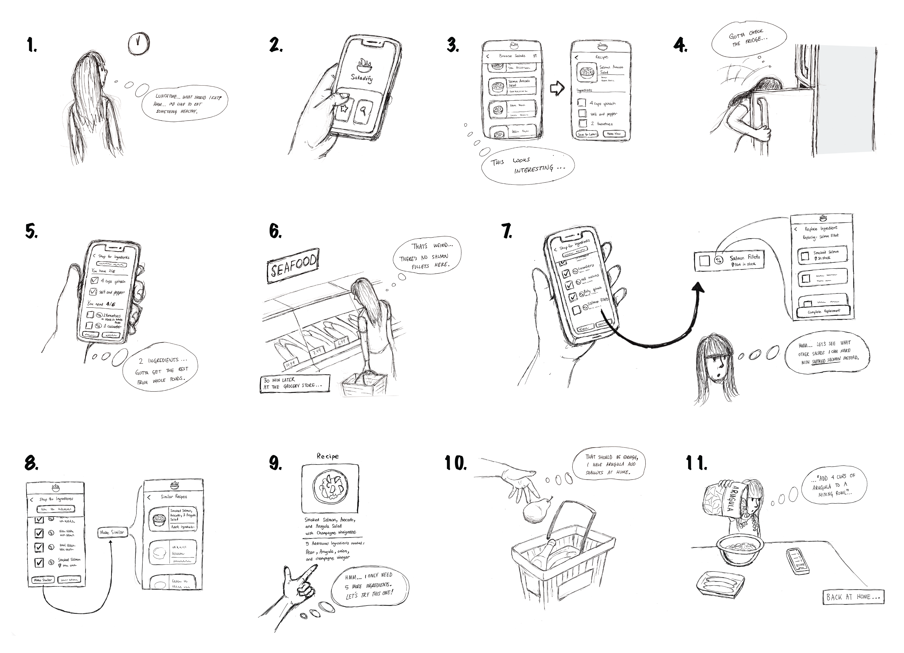
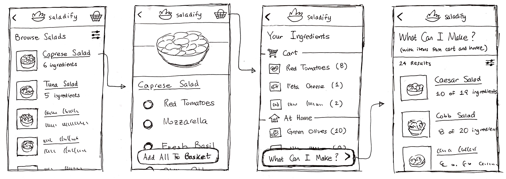
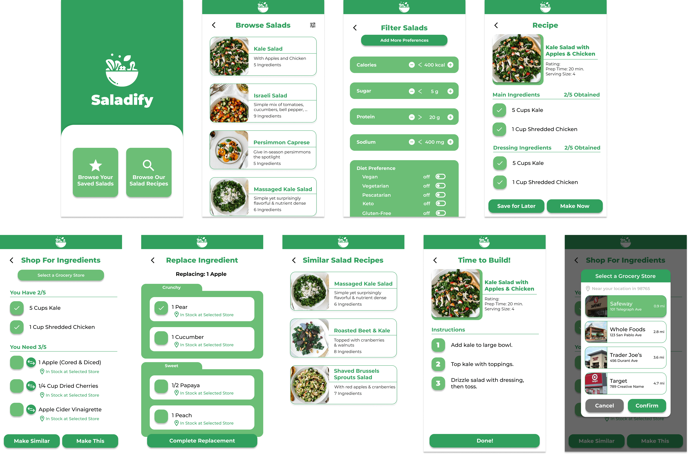
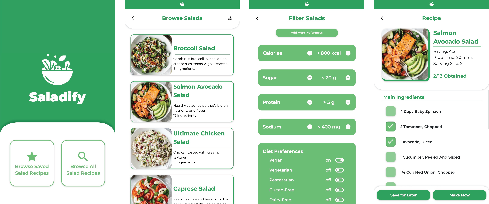
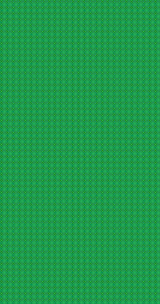
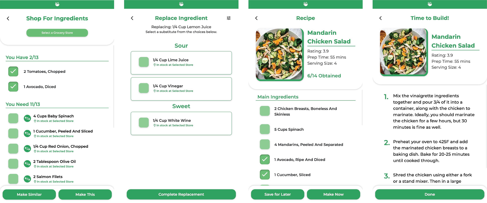

BACKGROUND
Talad is a startup based in San Francisco that seeks to increase productivity and access in the global agriculture industry by providing a user-friendly platform that connects farmers with contractors.
As the UX designer, I provided my insight to a user friendly mobile application
Hi-fi Prototyping
Insert caption here

SKETCHES
After finalizing my idea, I created some sketches to demonstrate a mockup of our app’s interface and to highlight some of the key features of Saladify, including the ability to browse for salads, track its ingredients, and to also view similar salads (recipes for other salads with similar ingredients with your selected recipe).

Next, I constructed some wireframes for Saladify’s interactions in order to move to a higher level of detail and visualize the flow of the application from screen to screen.
PROTOTYPING
My favorite part of the design process, bringing our design to a higher fidelity with increased interactivity by prototyping using Figma. From here, I finally decided on a minimalistic, green color scheme that would reflect Saladify’s healthy, “green” identity.
Lo-fi prototype
Hi-fi prototype

FINAL DESIGN + IMPLEMENTATION
Lastly, it was time to implement my final design into a properly functional product, using HTML, CSS, and Javascript.
Part I - Browsing and Viewing Recipe


1.
Home page
See saved recipes or go to browse
2.
Browse salads
Scroll through recommended recipes,
or view filter options in top right
3.
Filter salads
Filter out search results based on dietary restrictions
4.
View recipe's ingredients
Once recipe is selected, view checklist of
ingredients and checkmark ones already at home
Part II - Build Recipe or Find New Suggestions

5.
Shop for ingredients
Find grocery options for buying remaining ingreds, or swap ingredient with suggested substitute
6.
Replace ingredients
Replace ingredient with suggested substitute based on flavor
7.
View recipe ingredients
After replacing ingredients, return to recipe with updated ingredient list
8.
View recipe instructions
Scroll through recipe instructions step by step